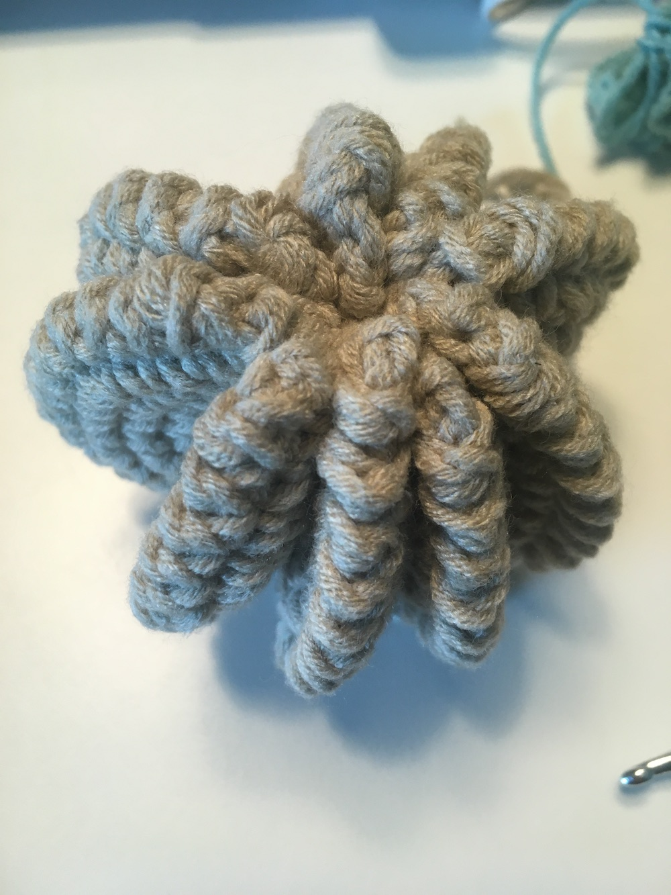
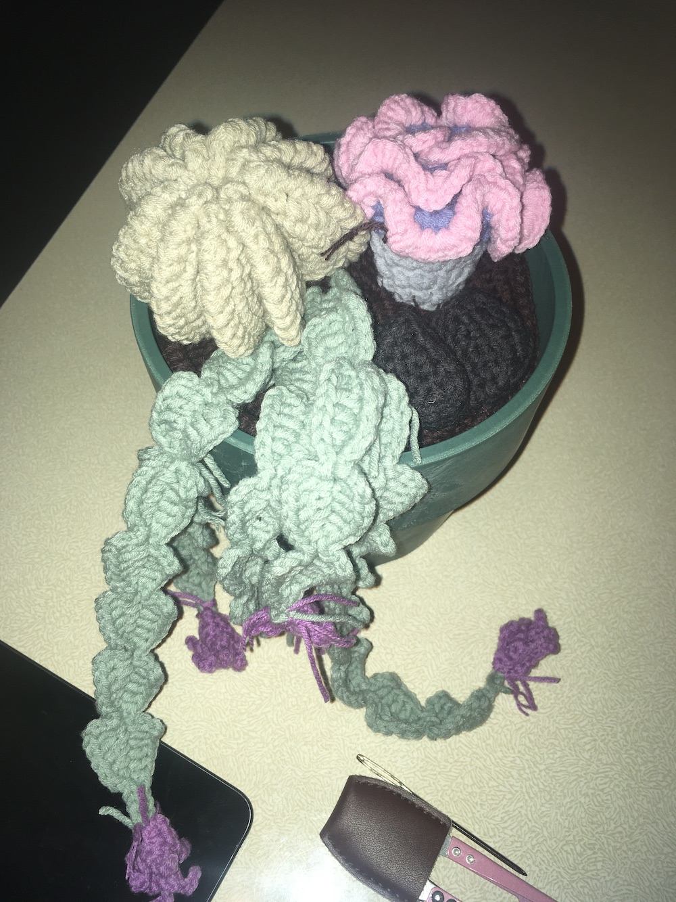
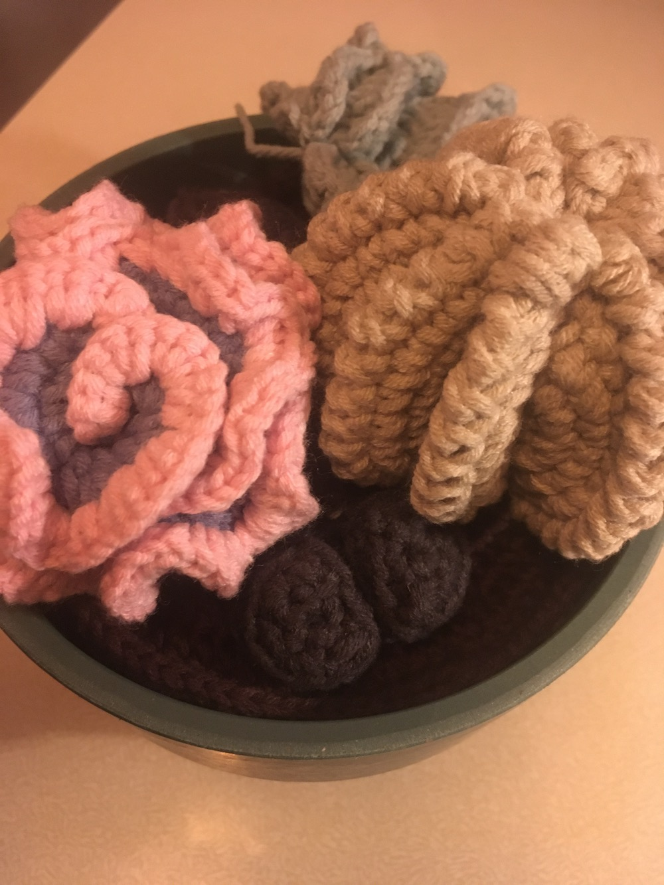
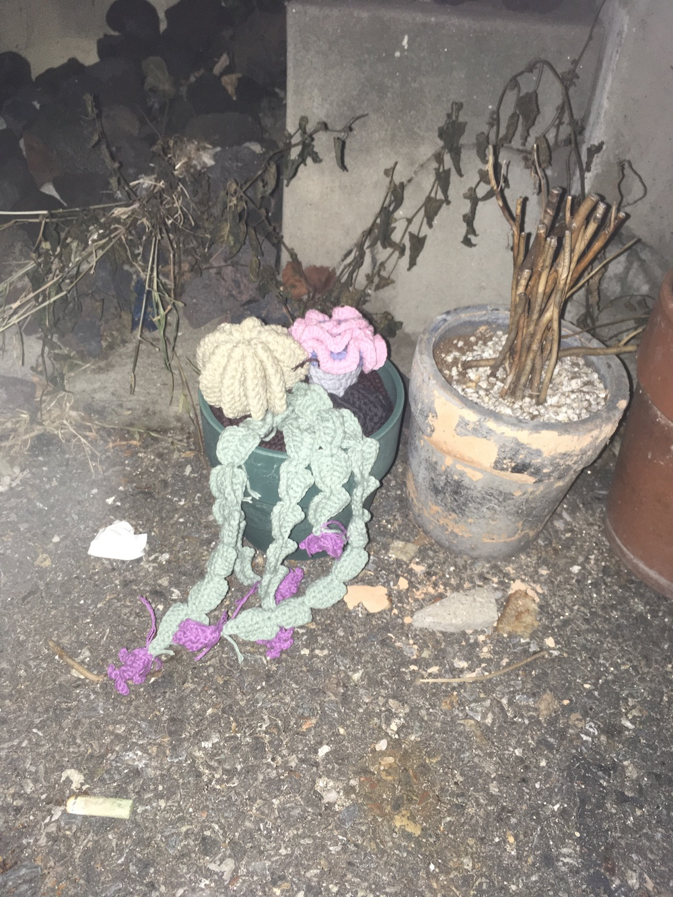

뜨는 과정에 대해 좀더 자세히 얘기해보겠다. 이 도안을 위해 실을 따로 사기도 했는데 생각보다 색이 마음에 들지 않아서 만다라를 뜨기 위해 샀던 실을 사용했다. 도안에는 내가 주로 사용한 두께보다 조금 얇은 실을 권장했지만 줏대 있게 그냥 떴다. 그래서 좀 통통한 느낌으로 완성된 것 같다.
도안의 실 색과 유사한 걸 기준으로 삼되, 어쨌든 내가 좋아하는 색을 쓰다 보니 기본적으로 좀 탁한 색을 많이 쓰게 됐다. 특히 원형선인장은 언젠가 저렴하게 샀던 다육이아마도 죽었다의 색을 떠올리며 의도적으로 이런 색을 고른 거다. 진짜로.
그리고 제일 마음에 드는 색의 식물은 christmas cactus라는 이름의 식물인데, 원래 좀더 쨍한 청록색의 실을 쓸까 하다가 이걸로 선택했고 결론적으로 아주 마음에 든다. 아래 달린 꽃 부분은, 오리지널 식물의 꽃이 아주 쨍한 진달래 색이고 그런 실이 있기도 하지만, 잎 부분의 색과 맞지 않아서 그냥 무난한 보라색을 썼다. 이 꽃 뜨고 만드는 게 사실 좀 너무. ..
Stone cactus라는 친구는 색은 별 고민없이 골랐는데, 뜨고 보니 너무 귀여워서 아주 마음에 든다.
그리고 ruffle 어쩌구 선인장이 가장 복잡했는데, 이제껏 떠보지 않은 방식으로 떠서 그런 부분이 또 재밌었다. 입체감과 부피감을 주는 방식에 대해 배울 수 있는 선인장이었다. 아, 이건 색을 고를 때 좀 고민을 했는데 원래 도안 상의 색과 비슷하면서도 뭔가 미묘하게 다른 색의 실만 있어서 그냥 적당히 떴다. 뜨고 보니 썩 나쁘지 않다. 다만 다른 텁텁색깔에 비해 좀 색이 파스텔감성이라 그게 좀 좋기도 하고 아쉽기도 하고. 괜한 생각이다.
다른 기록에도 남겼지만 결국 마무리는 공예의 영역이고 제일 하기 싫은 단계이기도 한데, 이 도안도 각각의 식물을 뜨는 건 좀 지루하긴 하지만 하여간에 재미가 있었다. 하지만 마지막 마무리는 역시 좀 지난했다. 각각의 식물을 다 뜨고 나서 흙 색의 실로 큰 원형의 밑판을 만들고 여기에 적절히 알아서 대충 고정을 해야 했다. 흙 밑판은, 언젠가 실수는 아닌데 실수로 구매한 게 되어버린 2합(엄청 얇은) 갈색 실이 여럿 있어서 그걸 네 가닥을 모아서 8합으로 떴다. 사실 시간이 모자랄 일은 없는데 어쩌다 보니 빨리 완성을 해야 하는 상황(스스로와의 약속)이 되어서 윗판만 화분에 입구에 맞춰 뜨고 아래는.. 선물한 사람과 선물 받은 사람 만의 비밀로 묻어 두겠다.
완성하고 보니 진짜 막 눈이 풀렸다.. 그래도 뿌듯했고.. 쓸모 없지만? 쓸모가 아주 없지는 않았던 것? 같다.